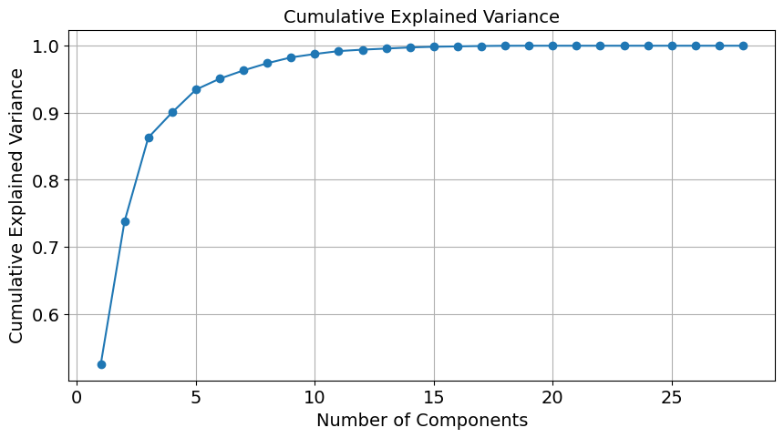
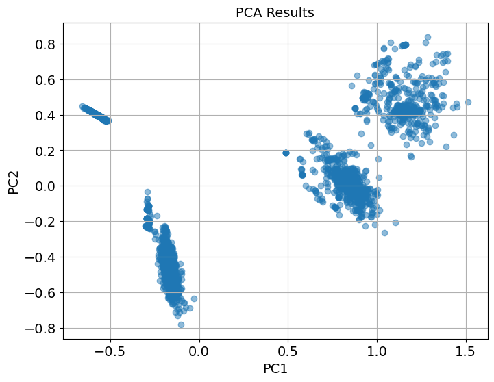
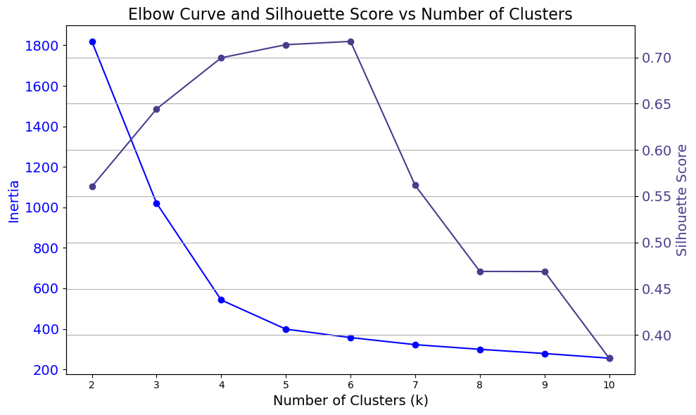
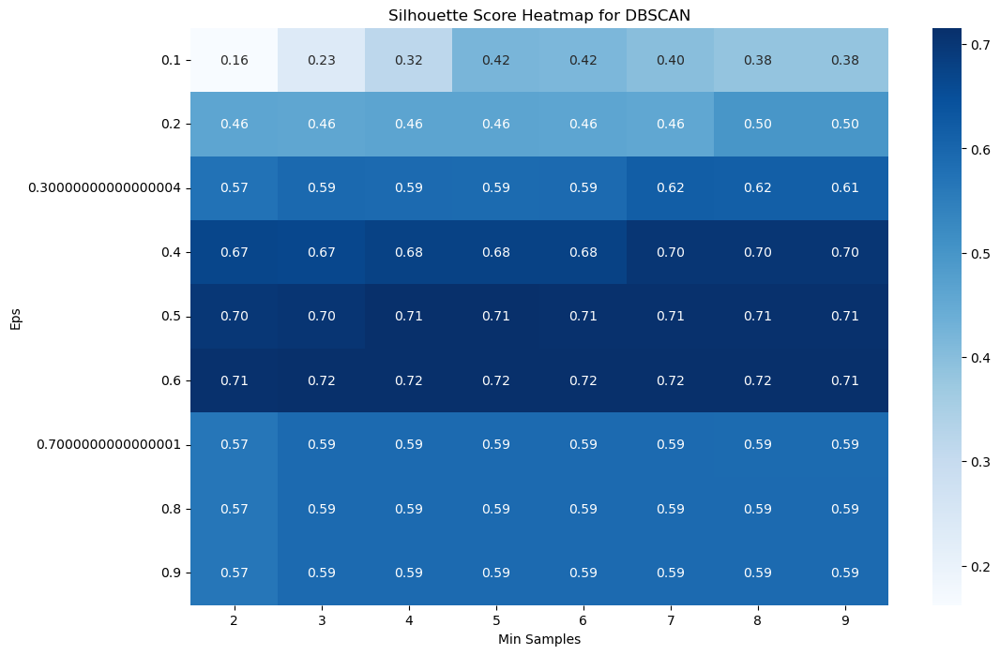
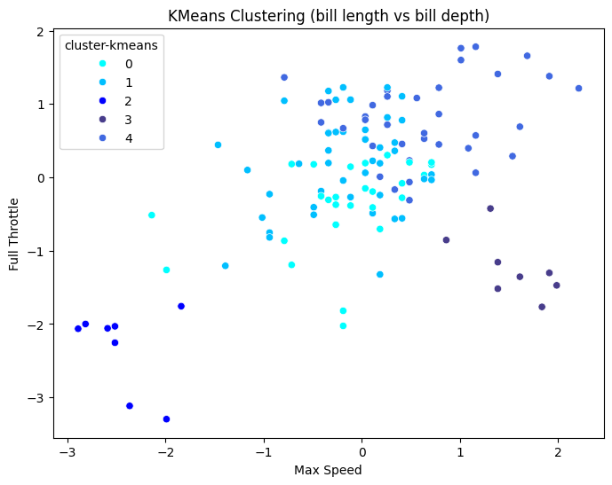

# import required libraries
import pandas as pd
import numpy as np
import seaborn as sns
import matplotlib.pyplot as plt
from sklearn.cluster import Birch, KMeans, DBSCAN, AgglomerativeClustering, SpectralClustering
from sklearn.metrics import silhouette_score, calinski_harabasz_score
from sklearn.neighbors import NearestNeighbors
from sklearn.preprocessing import StandardScaler
from scipy.cluster.hierarchy import dendrogram, linkage, fcluster, set_link_color_palette
from sklearn.decomposition import PCA
from sklearn.manifold import TSNE
Unsupervised Learning
Instructions
Note: You should remove these instructions once you have read and understood them. They should not be included in your final submission.
Remember: Exactly what do you put on this page will be specific you your project and data. Some things might “make more sense” on one page rather than another, depending on your workflow. Organize your project in a logical way that makes the most sense to you.
Suggested page structure
Here’s one suggested structure for organizing your technical pages. You can adjust this as needed:
Audience:Remember that these are written for a technical audience. Assume they have completed the DSAN program, but would appreciate refreshers of the important concepts.
- Introduction and Motivation: Briefly outline your plan. What are you doing on this page, and why? Provide context and explain the goals of your analysis.
- Overview of Methods: Give a concise explanation of the methods used. For example, if using K-Means clustering, describe what it is, how it works, the inputs and outputs, and key hyperparameters.
- Code: Include the code you used to implement your workflow.
- Summary and Interpretation of Results: Summarize your findings, interpret the results, and discuss their technical implications.
What to address
The following is a list of some of the things you should address on this page. This list is not exhaustive, and you should use your judgment to decide what is most relevant to your project.
This page is designed to give you hands-on experience with key unsupervised learning techniques, including clustering methods and dimensionality reduction, applied to real-world datasets. Please apply algorithms such as K-Means, DBSCAN, Hierarchical clustering, PCA, and t-SNE to your data. Through this process, you’ll deepen your understanding of how unsupervised learning can reveal hidden patterns and structure in data.
Part 1: Dimensionality Reduction
The objective of this section is to explore and demonstrate the effectiveness of PCA and t-SNE in reducing the dimensionality of complex data while preserving essential information and improving visualization.
- PCA (Principal Component Analysis):
- Apply PCA to your dataset.
- Determine the optimal number of principal components.
- Visualize the reduced-dimensional data.
- Analyze and interpret the results.
- t-SNE (t-distributed Stochastic Neighbor Embedding):
- Implement t-SNE on the same dataset.
- Experiment with different perplexity values.
- Visualize the t-SNE output to reveal patterns and clusters.
- Compare the results of t-SNE with those from PCA.
- Evaluation and Comparison:
- Evaluate the effectiveness of PCA and t-SNE in preserving data structure.
- Compare the visualization capabilities of both techniques.
- Discuss the trade-offs and scenarios where one technique may perform better than the other.
Part 2: Clustering Methods
Apply clustering techniques (K-Means, DBSCAN, and Hierarchical clustering) to a selected dataset. The goal is to understand how each method works, compare their performance, and interpret the results.
- Clustering Methods:
- Apply K-Means, DBSCAN, and Hierarchical clustering to your dataset.
- Write a technical summary for each method (2–4 paragraphs per method) explaining how it works, its purpose, and any model selection methods used (e.g., Elbow, Silhouette).
- Results Section:
- Discuss and visualize the results of each clustering analysis.
- Compare the performance of different clustering methods, noting any insights gained from the analysis.
- Visualize cluster patterns and how they relate (if at all) to existing labels in the dataset.
- Use professional, labeled, and clear visualizations that support your discussion.
- Conclusion:
- Summarize the key findings and their real-world implications in a non-technical way. Focus on the most important results and how they could apply to practical situations.
Code
Provide the source code used for this section of the project here.
If you’re using a package for code organization, you can import it at this point. However, make sure that the actual workflow steps—including data processing, analysis, and other key tasks—are conducted and clearly demonstrated on this page. The goal is to show the technical flow of your project, highlighting how the code is executed to achieve your results.
If relevant, link to additional documentation or external references that explain any complex components. This section should give readers a clear view of how the project is implemented from a technical perspective.
Remember, this page is a technical narrative, NOT just a notebook with a collection of code cells, include in-line Prose, to describe what is going on.
import warnings
warnings.filterwarnings("ignore")Dimensionality Reduction
df_transformed = pd.read_csv("../../data/processed-data/pitstop.csv")df_transformed.head()| Unnamed: 0 | Year | Round | RaceName | DriverID | Lap1 | Lap2 | Lap3 | Lap4 | Lap5 | ... | Time5 | Time6 | Time7 | Duration1 | Duration2 | Duration3 | Duration4 | Duration5 | Duration6 | Duration7 | |
|---|---|---|---|---|---|---|---|---|---|---|---|---|---|---|---|---|---|---|---|---|---|
| 0 | 0 | 2011 | 1 | Australian Grand Prix | alguersuari | 0.000000 | 0.229730 | 0.479452 | 0.000000 | 0.0 | ... | 0.0 | 0.0 | 0.0 | 0.453661 | 0.428042 | 0.457423 | 0.000000 | 0.0 | 0.0 | 0.0 |
| 1 | 1 | 2011 | 1 | Australian Grand Prix | alonso | 0.174603 | 0.364865 | 0.575342 | 0.000000 | 0.0 | ... | 0.0 | 0.0 | 0.0 | 0.392151 | 0.432766 | 0.419802 | 0.000000 | 0.0 | 0.0 | 0.0 |
| 2 | 2 | 2011 | 1 | Australian Grand Prix | ambrosio | 0.206349 | 0.513514 | 0.000000 | 0.000000 | 0.0 | ... | 0.0 | 0.0 | 0.0 | 0.426017 | 0.462739 | 0.000000 | 0.000000 | 0.0 | 0.0 | 0.0 |
| 3 | 3 | 2011 | 1 | Australian Grand Prix | barrichello | 0.190476 | 0.310811 | 0.383562 | 0.512821 | 0.0 | ... | 0.0 | 0.0 | 0.0 | 0.398762 | 0.662386 | 0.293259 | 0.469108 | 0.0 | 0.0 | 0.0 |
| 4 | 4 | 2011 | 1 | Australian Grand Prix | buemi | 0.222222 | 0.391892 | 0.000000 | 0.000000 | 0.0 | ... | 0.0 | 0.0 | 0.0 | 0.427417 | 0.404192 | 0.000000 | 0.000000 | 0.0 | 0.0 | 0.0 |
5 rows × 33 columns
features = [
"Lap1", "Lap2", "Lap3", "Lap4", "Lap5", "Lap6", "Lap7",
"Stop1", "Stop2", "Stop3", "Stop4", "Stop5", "Stop6", "Stop7",
"Time1", "Time2", "Time3", "Time4", "Time5", "Time6", "Time7",
"Duration1", "Duration2", "Duration3", "Duration4", "Duration5", "Duration6", "Duration7"
]
X = df_transformed[features]
# Apply PCA
pca = PCA(n_components=10)
X_pca = pca.fit_transform(X)
# Explained Variance Ratio
explained_variance_ratio = pca.explained_variance_ratio_
cumulative_explained_variance = np.cumsum(explained_variance_ratio)# Plot Explained Variance
plt.figure(figsize=(10, 5))
plt.plot(range(1, len(explained_variance_ratio) + 1), explained_variance_ratio, marker='o', label='Explained Variance')
plt.xlabel('Number of Components')
plt.ylabel('Explained Variance Ratio')
plt.title('Explained Variance by Each Component')
plt.grid(True)
plt.show()
# Plot Cumulative Explained Variance
plt.figure(figsize=(10, 5))
plt.plot(range(1, len(cumulative_explained_variance) + 1), cumulative_explained_variance, marker='o', label='Cumulative Variance')
plt.xlabel('Number of Components')
plt.ylabel('Cumulative Explained Variance')
plt.title('Cumulative Explained Variance')
plt.grid(True)
plt.show()

# Plot PCA results (2D)
plt.figure(figsize=(8, 6))
plt.scatter(X_pca[:, 0], X_pca[:, 1], alpha=0.5)
plt.title("PCA Results")
plt.xlabel("PC1")
plt.ylabel("PC2")
plt.grid(True)
plt.show()
# Apply t-SNE
tsne = TSNE(n_components=2, random_state=42, perplexity=30)
X_tsne = tsne.fit_transform(X)
# Plot t-SNE results
plt.figure(figsize=(10, 7))
plt.scatter(X_tsne[:, 0], X_tsne[:, 1], alpha=0.7)
plt.title("t-SNE Results")
plt.xlabel("t-SNE-1")
plt.ylabel("t-SNE-2")
plt.grid(True)
plt.show()
# Apply t-SNE
tsne = TSNE(n_components=2, random_state=42, perplexity=50)
X_tsne = tsne.fit_transform(X)
# Plot t-SNE results
plt.figure(figsize=(10, 7))
plt.scatter(X_tsne[:, 0], X_tsne[:, 1], alpha=0.7)
plt.title("t-SNE Results")
plt.xlabel("t-SNE-1")
plt.ylabel("t-SNE-2")
plt.grid(True)
plt.show()
def maximize_silhouette(X, algo="birch", nmax=20, i_plot=False, i_print=False):
# Ensure `X` is contiguous
X = np.ascontiguousarray(X)
# Initialize Variables
params = []
sil_scores = []
sil_max = -10 # Initial silhouette score
opt_param = None
opt_labels = None
# Hyperparameter Search
for param in range(2, nmax + 1):
# Choose clustering algorithm based on `algo`
if algo == "birch":
model = Birch(n_clusters=param) # Fixed typo: 'models' to 'model'
elif algo == "ag":
model = AgglomerativeClustering(n_clusters=param)
elif algo == "dbscan":
eps = param * 0.25
model = DBSCAN(eps=eps)
elif algo == "kmeans":
model = KMeans(n_clusters=param, n_init=5, random_state=42)
else:
raise ValueError(f"Unknown algorithm: {algo}")
# Fit model and predict labels
labels = model.fit_predict(X)
# Compute Silhouette Score
if len(np.unique(labels)) > 1:
sil_score = silhouette_score(X, labels)
else:
sil_score = -1 # Ignore cases with a single cluster
params.append(param)
sil_scores.append(sil_score)
# Update optimal parameters
if sil_score > sil_max:
sil_max = sil_score
opt_param = param
opt_labels = labels
if i_print:
print(f"Param: {param}, Silhouette Score: {sil_score}")
# Output the optimal parameter
print("OPTIMAL PARAMETER =", opt_param)
# Plot silhouette scores if `i_plot=True`
if i_plot:
plt.figure(figsize=(10, 5))
plt.plot(params, sil_scores, marker='o')
plt.xlabel('Parameter')
plt.ylabel('Silhouette Score')
plt.title(f'Silhouette Score vs Parameter for {algo}')
plt.grid(True)
plt.show()
return opt_param, opt_labelsClustering
def optimize_dbscan_with_heatmap(X, eps_range, min_samples_range):
best_score = -1
best_eps = None
best_min_samples = None
best_labels = None
best_cluster_count = None
# Create a dictionary to store silhouette scores for heatmap
score_dict = {}
for eps in eps_range:
score_dict[eps] = []
for min_samples in min_samples_range:
# Initialize DBSCAN
model = DBSCAN(eps=eps, min_samples=min_samples)
labels = model.fit_predict(X)
# Calculate silhouette score if there are more than 1 cluster
if len(set(labels)) > 1:
score = silhouette_score(X, labels)
else:
score = -1
score_dict[eps].append(score)
if score > best_score:
best_score = score
best_eps = eps
best_min_samples = min_samples
best_labels = labels
# Count clusters excluding noise
best_cluster_count = len(set(labels)) - (1 if -1 in labels else 0)
# Convert the score dictionary to a DataFrame for heatmap
score_df = pd.DataFrame(score_dict, index=min_samples_range).T
# Plot the heatmap
plt.figure(figsize=(12, 8))
sns.heatmap(score_df, annot=True, fmt=".2f", cmap="coolwarm", xticklabels=min_samples_range, yticklabels=eps_range)
plt.title("Silhouette Score Heatmap for DBSCAN")
plt.xlabel("Min Samples")
plt.ylabel("Eps")
plt.show()
# Output the optimal parameters
print(f"Best Silhouette Score: {best_score}")
print(f"Optimal eps: {best_eps}")
print(f"Optimal min_samples: {best_min_samples}")
print(f"Optimal number of clusters: {best_cluster_count}")
return best_eps, best_min_samples, best_cluster_count, best_labels
# Example Usage
eps_range = np.arange(0.1, 1.0, 0.1)
min_samples_range = range(2, 10)
best_eps, best_min_samples, best_cluster_count, best_labels = optimize_dbscan_with_heatmap(X_scaled, eps_range, min_samples_range)
Best Silhouette Score: 0.49675464054057933
Optimal eps: 0.9
Optimal min_samples: 5
Optimal number of clusters: 15def kmeans_elbow_silhouette(X, cluster_range):
inertia_scores = []
silhouette_scores = []
for k in cluster_range:
# Initialize and fit KMeans
kmeans = KMeans(n_clusters=k, n_init=10, random_state=5000)
labels = kmeans.fit_predict(X)
# Calculate inertia
inertia_scores.append(kmeans.inertia_)
# Calculate silhouette score if there are more than 1 cluster
if len(set(labels)) > 1:
silhouette_scores.append(silhouette_score(X, labels))
else:
silhouette_scores.append(-1) # Assign a low score for invalid clusters
# Plot Elbow Curve and Silhouette Score
fig, ax1 = plt.subplots(figsize=(10, 6))
# Elbow Curve
ax1.plot(cluster_range, inertia_scores, 'b-o', label='Inertia')
ax1.set_xlabel("Number of Clusters (k)")
ax1.set_ylabel("Inertia", color="blue")
ax1.tick_params(axis="y", labelcolor="blue")
# Silhouette Score Curve
ax2 = ax1.twinx()
ax2.plot(cluster_range, silhouette_scores, 'r-o', label='Silhouette Score')
ax2.set_ylabel("Silhouette Score", color="red")
ax2.tick_params(axis="y", labelcolor="red")
# Title and grid
plt.title("Elbow Curve and Silhouette Score for KMeans")
plt.grid(True)
fig.tight_layout()
plt.show()
cluster_range = range(2, 11)
kmeans_elbow_silhouette(X, cluster_range)# Apply KMeans clustering with optimal K
kmeans = KMeans(n_clusters=5, n_init=10, random_state=5000)
kmeans_labels = kmeans.fit_predict(X_pca)
# Visualize clustering results on PCA-transformed data
plt.figure(figsize=(10, 6))
scatter = plt.scatter(X_pca[:, 0], X_pca[:, 1], c=kmeans_labels, alpha=0.6, cmap='cool')
plt.xlabel('Principal Component 1')
plt.ylabel('Principal Component 2')
plt.title(f'KMeans Clustering Results Visualized with PCA (k=5)')
plt.colorbar(scatter, label="Cluster Labels")
plt.grid(True)
plt.show()
# Evaluate silhouette score
sil_score = silhouette_score(X_pca, kmeans_labels)
print(f"Silhouette Score for KMeans on PCA-transformed Data: {sil_score:.3f}")
Silhouette Score for KMeans on PCA-transformed Data: 0.710# load the data
df = pd.read_csv("../../data/processed-data/race_track_features.csv")
df.head()| Year | Grand Prix | Track Length (m) | Max Speed (km/h) | Full Throttle (%) | Number of Corners | Number of Straights | Unnamed: 7 | |
|---|---|---|---|---|---|---|---|---|
| 0 | 2020 | Pre-Season Test 1 | -1.000607 | -0.115670 | 1.059667 | -0.789651 | -0.938394 | NaN |
| 1 | 2020 | Pre-Season Test 2 | -1.000607 | -0.115670 | 1.059667 | -0.789651 | -0.938394 | NaN |
| 2 | 2020 | Austrian Grand Prix | -1.000607 | -0.115670 | 1.059667 | -0.789651 | -0.938394 | NaN |
| 3 | 2020 | Styrian Grand Prix | -1.024865 | -1.840980 | -1.757479 | -0.275003 | -0.037811 | NaN |
| 4 | 2020 | Hungarian Grand Prix | -0.957039 | -0.490737 | -0.407433 | -1.304300 | -0.037811 | NaN |
K-Means
# hyperparameter tuning
req_cols = ["Track Length (m)", "Max Speed (km/h)", "Full Throttle (%)", "Number of Corners", "Number of Straights"]
# Initialize lists to store evaluation metrics
em = [] # For inertia (WCSS)
ss = [] # For silhouette scores
for i in range(2,10):
kmeans = KMeans(n_clusters = i).fit(df[req_cols])
# intertia = within cluster sum of sqaures (WCSS)
em.append(kmeans.inertia_)
# silhouette scores
score = silhouette_score(df[req_cols], kmeans.labels_)
ss.append(score)k_values = range(2, 10)
fig, ax1 = plt.subplots(figsize=(10, 6))
# First y-axis for Intertia
ax1.plot(k_values, em, 'blue', marker='o', label='Inertia Score')
ax1.set_xlabel("Number of Clusters (k)", fontsize=14)
ax1.set_ylabel("Intertia", color ='blue', fontsize=14)
ax1.tick_params(axis='y', labelcolor ='blue', labelsize=14)
# Second y-axis for silhouette scores
ax2 = ax1.twinx()
ax2.plot(k_values, ss, 'darkslateblue',marker='o', label='Silhouette Score')
ax2.set_ylabel("Silhouette Score", color = 'darkslateblue', fontsize=14)
ax2.tick_params(axis='y', labelcolor ='darkslateblue', labelsize=14)
# Title
plt.title("Elbow Curve and Silhouette Score vs Number of Clusters", fontsize=14)
fig.tight_layout()
plt.show()
# Initializing and fitting the KMeans model with the optimal number of clusters
clusters = 5
kmeans = KMeans(n_clusters=clusters, random_state=123, n_init='auto')
kmeans.fit(df[req_cols])
# Predicting cluster labels
df['cluster-kmeans'] = kmeans.labels_
df.drop(columns=["Unnamed: 7"], inplace=True)
df.head()| Year | Grand Prix | Track Length (m) | Max Speed (km/h) | Full Throttle (%) | Number of Corners | Number of Straights | clusters-dbscan | cluster-kmeans | |
|---|---|---|---|---|---|---|---|---|---|
| 0 | 2020 | Pre-Season Test 1 | -1.000607 | -0.115670 | 1.059667 | -0.789651 | -0.938394 | -1 | 1 |
| 1 | 2020 | Pre-Season Test 2 | -1.000607 | -0.115670 | 1.059667 | -0.789651 | -0.938394 | -1 | 1 |
| 2 | 2020 | Austrian Grand Prix | -1.000607 | -0.115670 | 1.059667 | -0.789651 | -0.938394 | -1 | 1 |
| 3 | 2020 | Styrian Grand Prix | -1.024865 | -1.840980 | -1.757479 | -0.275003 | -0.037811 | -1 | 2 |
| 4 | 2020 | Hungarian Grand Prix | -0.957039 | -0.490737 | -0.407433 | -1.304300 | -0.037811 | -1 | 1 |
custom_colors = ["cyan", "deepskyblue", "blue", "darkslateblue", "royalblue"]
plt.figure(figsize=(8, 6))
sns.scatterplot(x=df['Max Speed (km/h)'], y=df['Full Throttle (%)'], hue=df['cluster-kmeans'], palette=custom_colors)
plt.title('KMeans Clustering (bill length vs bill depth)')
plt.xlabel('Max Speed')
plt.ylabel('Full Throttle')
plt.show()
DBSCAN
features = df[["Track Length (m)", "Max Speed (km/h)", "Full Throttle (%)", "Number of Corners", "Number of Straights"]]eps_range = np.arange(0.1, 2.0, 0.1)
# Range for min_samples to test
min_samples_range = range(1, 20)
# Variables to store the best results
best_score = -1
opt_eps = None
best_min_samples = None
best_cluster_count = None
# Loop through each combination of eps and min_samples
for eps in eps_range:
for min_samples in min_samples_range:
# Initialize DBSCAN with the current parameters
dbscan = DBSCAN(eps=eps, min_samples=min_samples)
# Predict cluster labels
labels = dbscan.fit_predict(features)
# Ignore configurations that result in a single cluster or all points being noise
if len(set(labels)) > 1:
# Calculate silhouette score for the current parameters
score = silhouette_score(features, labels)
# Update best parameters if the current score is the highest
if score > best_score:
best_score = score
opt_eps = eps
best_min_samples = min_samples
# Count clusters excluding noise
best_cluster_count = len(set(labels)) - (1 if -1 in labels else 0)
# Print the optimal parameters and corresponding silhouette score
print("Best Silhouette Score:", best_score)
print("Optimal eps:", opt_eps)
print("Optimal min_samples:", best_min_samples)
print("Optimal number of clusters:", best_cluster_count)Best Silhouette Score: 0.4901591287514251
Optimal eps: 0.4
Optimal min_samples: 5
Optimal number of clusters: 1best_min_samples = best_min_samples
optimal_eps = opt_eps
# Initializing and fitting the DBSCAN model with the optimal parameters
dbscan = DBSCAN(eps = opt_eps, min_samples = best_min_samples)
labels_final = dbscan.fit_predict(features)df['clusters-dbscan'] = labels_finalHierarchical Clustering
set_link_color_palette(["lightskyblue", "cornflowerblue", "blue", "steelblue"])
df = pd.read_csv("../../data/processed-data/race_track_features.csv")
df = df[df["Year"] == 2023]
features = ["Track Length (m)", "Max Speed (km/h)", "Full Throttle (%)", "Number of Corners", "Number of Straights"]
X = df[features]
scaler = StandardScaler()
X_scaled = scaler.fit_transform(X)
linkage_matrix = linkage(X_scaled, method='ward')
plt.figure(figsize=(10, 7))
dendrogram(linkage_matrix, labels=df["Grand Prix"].values, leaf_rotation=90, leaf_font_size=10,color_threshold=6)
plt.title("Hierarchical Clustering Dendrogram - 2023", fontsize = 14)
plt.xlabel("Grand Prix", fontsize = 14)
plt.ylabel("Distance", fontsize = 14)
plt.show()
max_distance = 6
clusters = fcluster(linkage_matrix, max_distance, criterion='distance')
df.head()| Year | Grand Prix | Track Length (m) | Max Speed (km/h) | Full Throttle (%) | Number of Corners | Number of Straights | clusters-dbscan | cluster-kmeans | |
|---|---|---|---|---|---|---|---|---|---|
| 0 | 2020 | Pre-Season Test 1 | -1.000607 | -0.115670 | 1.059667 | -0.789651 | -0.938394 | -1 | 1 |
| 1 | 2020 | Pre-Season Test 2 | -1.000607 | -0.115670 | 1.059667 | -0.789651 | -0.938394 | -1 | 1 |
| 2 | 2020 | Austrian Grand Prix | -1.000607 | -0.115670 | 1.059667 | -0.789651 | -0.938394 | -1 | 1 |
| 3 | 2020 | Styrian Grand Prix | -1.024865 | -1.840980 | -1.757479 | -0.275003 | -0.037811 | -1 | 2 |
| 4 | 2020 | Hungarian Grand Prix | -0.957039 | -0.490737 | -0.407433 | -1.304300 | -0.037811 | -1 | 1 |